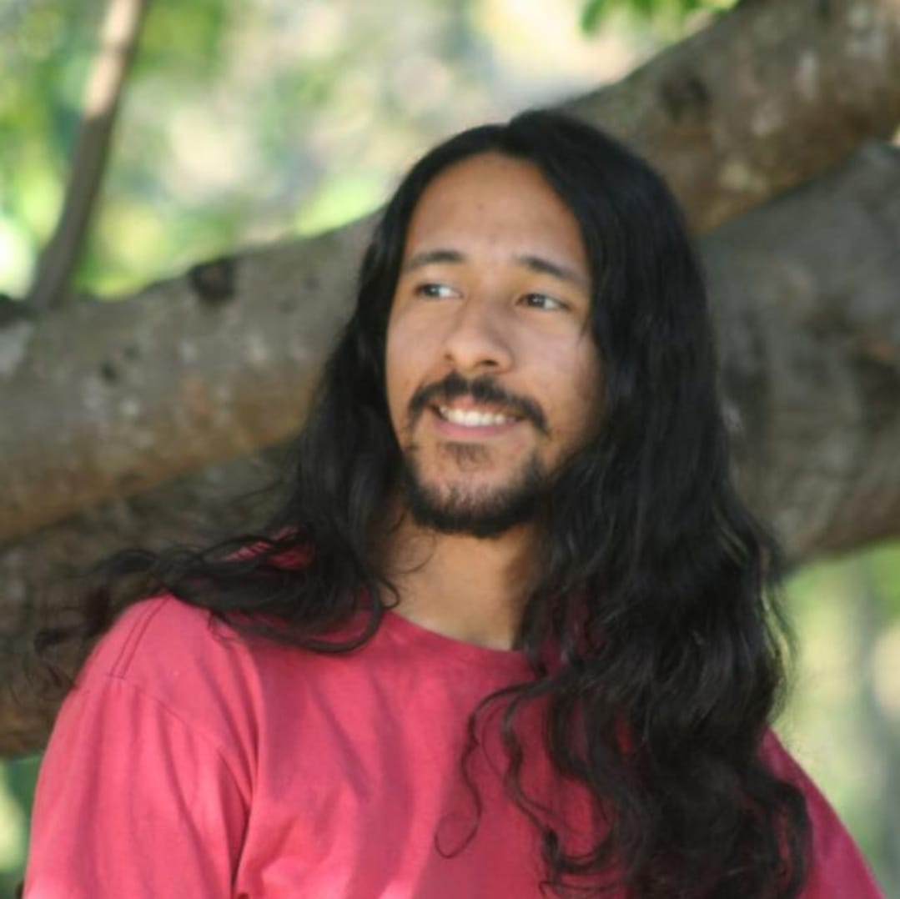

Quem Somos:
As pessoas por trás da Apply Engineering
Equipe
Vitória Daniele Augusto, nascida em solo potiguar, no estado do Rio Grande do Norte, Brasil, é uma visionária empreendedora e engenheira que tem deixado uma marca indelével no cenário tecnológico. Sua jornada notável na área de engenharia a levou a fundar e liderar a inovadora empresa Apply Engineering. Nascida em 2000, em Macaíba, Daniele sempre demonstrou uma paixão inabalável pela ciência e tecnologia desde tenra idade. Seu interesse precoce por desafios complexos e sua curiosidade incessante a guiaram na busca constante pelo conhecimento e pela excelência em engenharia. Daniele decidiu trilhar o caminho do empreendedorismo. Movida por uma visão audaciosa e uma determinação incansável, ela fundou a Apply Engineering, uma empresa que rapidamente se destacou no cenário empresarial pela sua abordagem inovadora e soluções engenhosas. À frente da Apply Engineering, Daniele liderou equipes de profissionais talentosos, dedicados a criar soluções tecnológicas que transcendem as expectativas do mercado. Sob sua liderança, a empresa se destacou em projetos desafiadores, conquistando a confiança de clientes e parceiros em todo o Brasil. A abordagem única de Daniele, que combina visão estratégica, pensamento analítico e uma mentalidade empreendedora, solidificou sua posição como uma líder respeitada no setor de tecnologia. Ela não apenas se destaca por sua competência técnica, mas também por seu compromisso com a inovação responsável e sustentável. Além de seu papel como líder empresarial, Vitória Daniele Augusto também é uma defensora ativa da diversidade e inclusão no campo da tecnologia. Ela dedica tempo e esforços para inspirar e apoiar jovens talentos, especialmente mulheres, a seguirem carreiras em STEM (Ciência, Tecnologia, Engenharia e Matemática). A história de Daniele é uma narrativa inspiradora de resiliência, visão e dedicação ao progresso tecnológico. Sua trajetória continuará a influenciar positivamente o setor de engenharia e empreendedorismo, servindo como um farol para as gerações futuras que buscam fazer a diferença no mundo da tecnologia.
Francelmo Guimarães de Farias é um profissional dedicado e apaixonado por tecnologia da informação, atualmente desempenhando papéis significativos em diferentes áreas. Com sede no Rio Grande do Norte, Brasil, Francelmo desempenha um papel crucial na Secretaria de Educação do estado, onde concentra seus esforços no desenvolvimento do site inovador para o Novo Ensino Médio. Atualmente, Francelmo está imerso em seus estudos na área de Tecnologia da Informação no Instituto Metrópole Digital (IMD) da Universidade Federal do Rio Grande do Norte (UFRN). Sua busca constante por conhecimento e aprimoramento técnico demonstra seu comprometimento em estar na vanguarda das mais recentes inovações tecnológicas. Além de suas responsabilidades na Secretaria de Educação, Francelmo é uma peça fundamental na equipe de desenvolvimento da Apply Engineering, onde contribui ativamente para projetos desafiadores e soluções inovadoras. Sua habilidade técnica e paixão pela programação fazem dele um membro valioso desta equipe dinâmica. Francelmo Guimarães de Farias é um profissional multifacetado, equilibrando com maestria suas responsabilidades na educação e no desenvolvimento de software. Sua visão para a integração da tecnologia na educação e seu comprometimento com a excelência técnica fazem dele um ativo essencial para qualquer projeto em que esteja envolvido.
Francélio Guimarães é um pesquisador da segurança da informação, cujos interesses abrangem as áreas da esteganografia, permutação e criptografia. Sua vasta experiência em sistemas operacionais, com ênfase especial em Linux, além de habilidades avançadas em manipulação em baixo nível e programação em assembly, C e Python, o coloca na vanguarda das pesquisas em segurança digital. Atualmente, Francélio desempenha um papel crucial como pesquisador de métodos de desbloqueio de dispositivos Android para a Polícia Federal, contribuindo significativamente para investigações e operações essenciais. Além disso, ele ocupa o cargo de Gerente de Segurança da Informação e Inovação na Apply Engineering. Como Gerente de Segurança da Informação e Inovação na Apply Engineering, Francélio lidera iniciativas estratégicas para garantir a proteção dos dados sensíveis da empresa e promover a inovação tecnológica. Ele desenvolve e implementa políticas de segurança robustas, monitora ameaças cibernéticas, e trabalha em estreita colaboração com equipes de desenvolvimento para integrar medidas proativas de segurança nos sistemas da empresa. Além disso, Francélio desempenha um papel fundamental na identificação e implementação de tecnologias inovadoras que podem aprimorar os processos internos e impulsionar a eficiência operacional da Apply Engineering. Sua abordagem holística para a segurança da informação e inovação destaca-o como um líder exemplar, capaz de equilibrar a proteção de dados críticos com a busca constante por avanços tecnológicos.